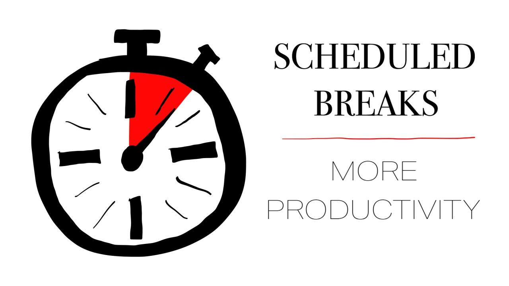
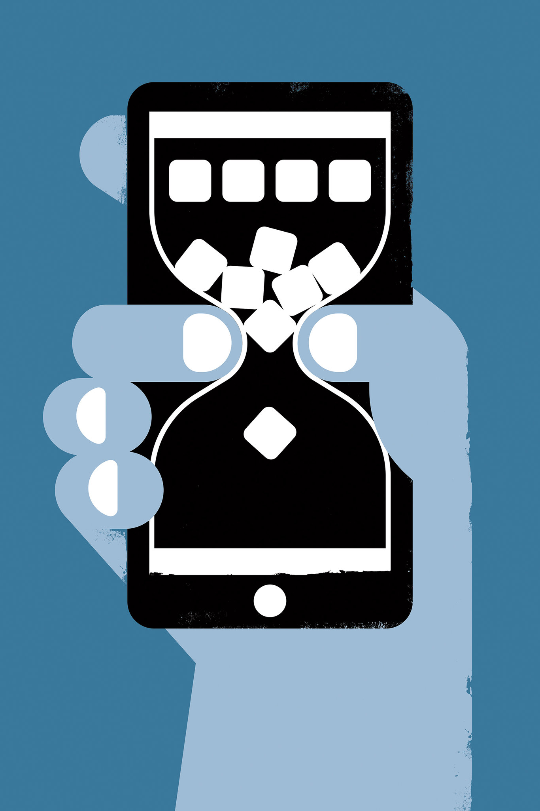
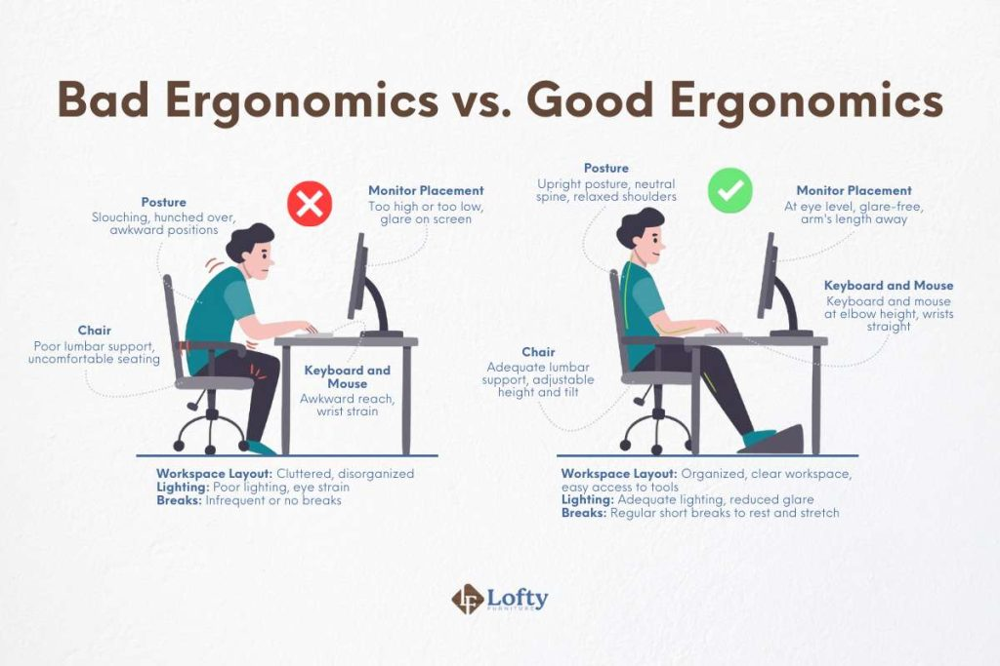
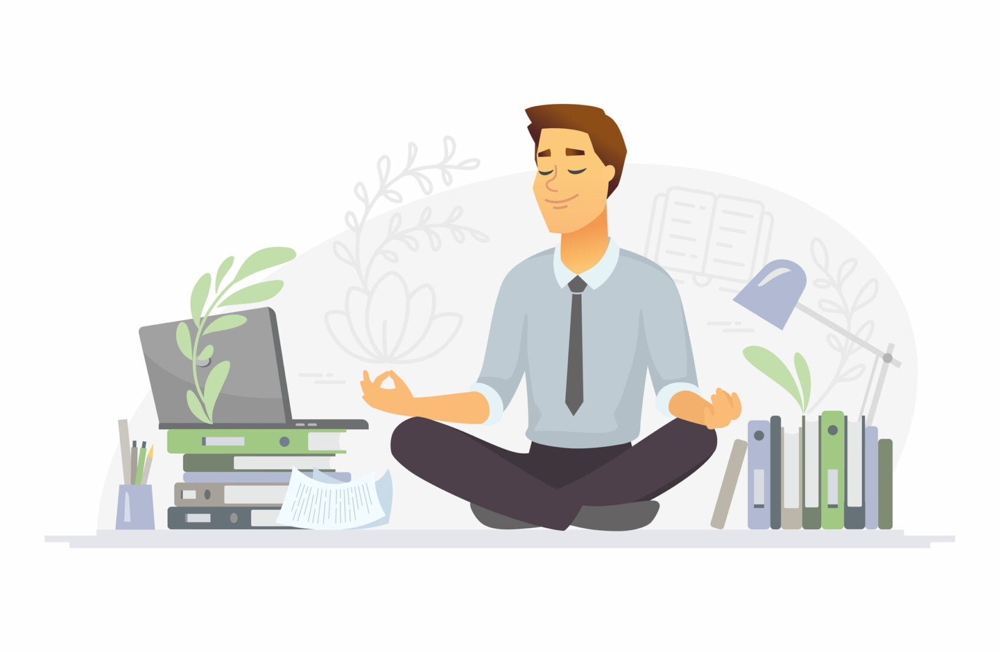

Schedule Active Breaks
People can easily counteract sitting for too long by scheduling short exercising breaks during the day. Even simple activities like stretching and walking can help with circulation, reduce muscle strain, and improve focus. Something else that is valuable are short breaks every hour.

Set Personal Screen Limits
Limiting screen time can encourage healthier habits. People should designate screen free periods every day or use apps to monitor screen usage. These can improve sleep quality, reduce eye strain, and promote physical activity.

Ergonomic Adjustments at Home
People should try to potimize their personal workspaces. This can prevent posture related issues. Using chairs with proper support, keeping screens at eye level, and maintaining good wrist and shoulder positions are simple steps individuals can take to protect their health.

Leverage Technology Positively
Technology itself can be a solution. Fitness apps, step counters, and online exercise programs allow individuals to integrate movement into their daily routines. These tools provide motivation, track progress, and create accountability for maintaining physical health.
Mindful Device Usage
Individuals should be more mindful of when and how much they use screens. They should be aware of the impact of prolonged device use and make conscious decisions based on that. This can help people balance productivity, social life, and physical well-being.
